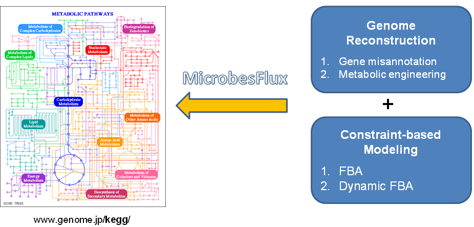

MicrobesFlux is a web-based platform designed by Dr. Xueyang Feng and You Xu. It supports:
MicrobesFlux is free, open-source software. It uses the KEGG database (KGML and LIGAND) and is empowered by cloud computation. It employs state-of-the-art optimization solvers, such as IPOPT, to solve large-scale flux-balance models.
Please acknowledge using our website by citing the following paper. X. Feng, Y. Xu, Y. Chen, and Y. Tang, MicrobesFlux: a web platform for drafting metabolic models from the KEGG database, BMC Systems Biology, 6:94 doi:10.1186/1752-0509-6-94, 2012.
MicrobesFlux is implemented with the following unique characteristics:
